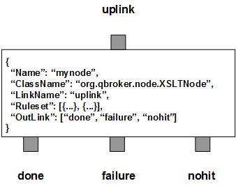

XSLTNode transforms XML payload of JMS messages into various content based on the XSL templates, specified by the URI or the ruleset. There are three outlinks, done for the formatted messages, failure for those messages failed in the transformation and nohit for those messages not belonging to any predefined rulesets.
XSLTNode contains a number of predefined rulesets. These rulesets categorize messages into non-overlapping groups. Therefore, each rule defines a unique message group. The ruleset also defines the transformation parameters, a template for the path to the XSL template files and their TTL. The template is used to build the full path to the XSL template files. The xsl template file has to be accessible from the filesystem or the supported storage. The original XML payload should be always stored in the message body. The cache count of templates for the rule will be stored to RULE_PEND. It will be updated when the session time exceeds the given SessionTimeout. XSLTNode caches every xslt templates dynamically. You can set the TTL for each rule so that its templets will expire and will be removed automatically. For parameters, XSLTNode supports dynamic setting of parameters. It means you can reference properties of the message in your parameters. XSLTNode will retrieve the data from incoming message and set the parameters before the transformation. Due to JMS specifications, you have to clear user properties before resetting them on a readonly message. You can specify ResetOption in a ruleset so that the message header will be reset for modifications. Its value is 0 for no reset, 1 for optional reset and 2 for guaranteed reset.
If TargetXPathExpression is defined, the URI will be treated as the path to another xml file on the disk. The xml content specified by SourceXPathExpression will be merged into the XML payload of the message at the position specified by TargetXPathExpression.
XSLTNode always adds an extra ruleset for the nohit messages. This nohit ruleset is always the first ruleset with the id of 0. On the node level, DisplayMask and StringProperty control the display result of outgoing messages.
You are free to choose any names for the three fixed outlinks. But XSLTNode always assumes the first outlink for done, the second for failure and the last for nohit.
Apart from the common properties, there are three implementation specific properties for XSLTNode.
| Property Name | Data Type | Requirement | Description | Examples |
|---|---|---|---|---|
| SessionTimeout | integer | optional | timeout in sec for a session | 3600 (default: 0) |
The transformation is executed via the pre-defined rulesets. Therefore, the configuration of the rulesets is critical to the operations of XSLTNode. Here are complete properties of rulesets for XSLTNode.
| Property Name | Data Type | Requirement | Description | Examples |
|---|---|---|---|---|
| Name | alphanumeric with no spaces | mandatory | name of the ruleset | event |
| URITemplate | string | optional | template for the full path of the template file | /opt/qbroker/xsl/##TempName##.xsl |
| URISubstitution | string | optional | text substitution for the full path of the template file | s/\.xml$/\.xsl/ |
| TimeToLive | integer | optional | seconds to cache the xsl templates | |
| ResetOption | integer | optional | option to reset properties | 2 (default: 0) |
| XSLParameter | map | optional | for setting xsl parameters from the messages | see example |
| TargetXPathExpression | string | mandatory for merge | to select the nodeset from the xml payload for merging position | see example |
| SourceXPathExpression | string | optional for merge | to select the nodeset from the source xml for merge | see example |
| PreferredOutLink | alphanumeric with no spaces | mandatory for bypass only | name of the preferred outlink | bypass |
| FormatterArgument | list | optional | list of post format operations | see example |
| JMSPropertyGroup | list | optional | list of pattern groups on properties to select messages | see example |
| XJMSPropertyGroup | list | optional | list of pattern groups on properties to exclude messages | see example |
| PatternGroup | list | optional | list of pattern groups on body to select messages | see example |
| XPatternGroup | list | optional | list of pattern groups on body to exclude messages | see example |
| StringProperty | map | optional | for setting the user properties on the messages | see example |
{
...
"Ruleset": [{
"Name": "bypass",
"PreferredOutLink": "BYPASS",
"JMSPropertyGroup": [{
"JMSType": "^score$"
}]
},{
...
}],
...
}
where it routes the messages to the outlink of BYPASS.
Here is an example of the transform ruleset.
{
...
"Ruleset": [{
"Name": "tm",
"JMSPropertyGroup": [{
"JMSType": "."
}],
"URITemplate": "/opt/qbroker/xsl/##JMSType##.xsl",
"ResetOption": "1",
"TimeToLive": "7200",
"XSLParameter": {
"tc": "##RTC##",
"tm": "##Millis##"
}
},{
...
}],
...
}
where it expects that the message has defined the template name of the xsl file
in its JMSType property. The node will extract the data for the two parameters
and set them before the transformation. Upon success, the message body will
contain the new content formatted from the xsl template.
Here is an example of the merge ruleset.
{
...
"Ruleset": [{
"Name": "merge",
"JMSPropertyGroup": [{
"FileName": "."
}],
"URITemplate": "##FileName##",
"TargetXPathExpression": "/*/Name",
"SourceXPathExpression": "/*/*",
},{
...
}],
...
}
where it expects that the message has defined the full path of the source xml
file in its property of FileName. The node will extract the xml content from
the source xml file and appends them to the xml payload. Upon success,
the message body will contain the new xml content merged with the xml source.
Here is an example of XSLTNode:
{
"Name": "node_xslt",
"ClassName": "org.qbroker.node.XSLTNode",
"Description": "transform messages",
"Operation": "transform",
"LinkName": "root",
"Capacity": "6",
"WaitTime": "50",
"DisplayMask": "0",
"Debug": "1",
"SessioTimeout": "600",
"Ruleset": [{
"Name": "html",
"JMSPropertyGroup": [{
"JMSType": "."
}],
"URITemplate": "/opt/qbroker/xsl/##JMSType##.xsl",
"TimeToLive": "3600"
}],
"OutLink": ["out", "failure", "nohit"]
}